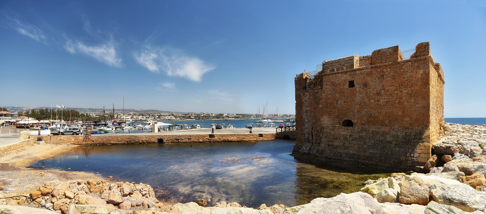
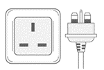

Travelling to Cyprus
Visa Requirements / Travel Information
EU countries, Commonwealth countries and the USA do NOT need a visa. Schengen Visa holders are allowed to enter the Republic of Cyprus.
For a list of countries whose citizens do NOT need a visa for a stay of up to 90 days, provided they are bona fide visitors click here.
To visit the official website of the Ministry of Foreign Affairs of the Republic of Cyprus click here.
Furthermore, please note that the legal ports of entry into the Republic of Cyprus are the airports of Larnaca and Paphos and the ports of Larnaca, Limassol, Latsi and Paphos, which are situated in the area under the effective control of the Government of the Republic of Cyprus. Entry into the territory of the Republic of Cyprus via any other port or airport in which the Government of the Republic does not exercise effective control (Turkish occupied areas) is illegal.
For invitation letters regarding visa purposes, please contact us directly at synedrio@topkinisis.com
ABOUT PAFOS

Pafos is a place full of light! Is a picturesque city where past meets present at every turn, with a strong culture and many traditions handed down through the ages. The mild climate, the luminous atmosphere, the variety of landscape, the monuments of civilization and art, which are scattered all over the land, are the most important characteristics of the area.
Pafos is one of the most important centres of ancient civilisation in the Mediterranean. The whole town of Pafos, which was the ancient capital of Cyprus, is included in the official UNESCO World Heritage list. The city was the island's capital for six centuries. Visitors can immerse themselves in archaeology, history and culture and experience one of the oldest civilisations in the world at first hand. With a history dating back more than eight thousand years, the town offers a wealth of treasures to the visitor. From the Stone Age, through Hellenistic and Roman times to the Byzantine era, many of Pafos' ancient monuments (such as the Medieval Castle, the Tombs of the Kings, the Archaeological Park etc) are included in UNESCO's Global Heritage List.
In ancient times Cyprus was the island of Aphrodite, the ancient Greek goddess of love and beauty, and Pafos was the principal centre of her worship. Here, you can also feel the romance in the air as you walk where Aphrodite once roamed. Swim in the sea by the rocks known as Petra tou Romiou, where she is believed to have risen from the waves.
Not too far from the mythological birthplace of Aphrodite lies the Municipality of Geroskipou. The name comes from the ancient "Hieros Kipos", or Sacred Garden, dedicated to the goddess. Browse the many roadside stalls selling handicrafts such as the basketry and pottery for which Geroskipou is known nowadays, as well as the popular confection called Geroskipou Loukoumi. While you are there, visit the Folk-Art Museum for a striking representation of traditional Cypriot life.
Experience the meaning of real relaxation in the "Polis tis Chrysochous" area, the least developed coastline of Cyprus. The Akamas National Park will appeal to nature lovers or those in search of peace and quiet. It is an area of exceptional beauty with rocky promontories, sandy coves and "The Baths of Aphrodite". This is where, according to mythology, the goddess Aphrodite frolicked with her lovers, bathing in a fresh-water grotto shaded by a wild fig tree.
This rural region is probably one of the best-kept secrets of the Mediterranean! It contains one of the last nesting grounds for green and loggerhead turtles, whose numbers have been greatly increased thanks to a successful conservation project on the sandy beaches of Lara. The area is criss-crossed by many beautiful nature trails where you can spot rare endemic plants like the Cyprus orchid, tulip, and crocus that grow here, or watch migrating birds fly by overhead.
With 75km of beautiful coastline, the Pafos Region offers many blue flag awarded beaches making the region the top choice for swimming, snorkelling and scuba diving. Both young and old can enjoy the many beach activities or opt to just relax and relish the magic of the clear azure waters of the Mediterranean.
Light, sun, sea: three very ancient words still used today by the same people in the same place, describe the area of Pafos!
*Information by Pafos Municipality and Pafos Regional Board of Tourism.


GENERAL INFORMATION
Currency / Banking Hours / Credit Cards
The currency of the Republic of Cyprus is the Euro (€). Banking hours for the public: Monday-Friday 08:00 - 13:30. There are many Automated Teller Machines (ATMs) outside most branches of banks in all towns and in the main tourist resorts. Hotels, large shops and restaurants normally accept credit cards and traveller's cheques. Banknotes of major foreign currencies are also acceptable. Rates of exchange are published daily in the local press and are broadcasted via the media.
Language
The conference will be in English. Simultaneous translation will not be provided.
Food and Drink
The conference venue, Aliathon Resort, is located on Theas Afrodites Avenue, which extends parallel to the beach and has multiple options for food and drinks. You can choose from a variety of Cypriot taverns and restaurants with international cuisine as well as bars and cafes.
General Shopping Hours
The summer period runs from April 1 to October 31; Shop opening times vary depending on their type and location, though shops normally open between 07:00 and 09:00. For the period April 1st - October 31st shops close at 20:00 on Monday, Tuesday, Thursday and Friday, at 15:00 on Wednesday and, at 19:30 on Saturday.
Chemist Pharmacies / Drug Stores
They stay open during shopping hours. Late night chemists are listed in the daily papers.
Time Zone
Eastern European Summer Time (GMT +3).
Climate
Cyprus enjoys a Mediterranean climate with long dry summers from mid-May to mid-October and with mild winters from December to February, which are separated by short autumn and spring seasons. The average daily temperature in July is around 34°C, with the minimum temperature around 22°C.
Tipping
Because of the 10% service charge levied in hotels and restaurants, a tip is not obligatory, but small change is always welcome. Taxi-drivers, porters, hairdressers etc., always appreciate a small tip.
Power Supply - Voltage
The supply in Cyprus is 240 volts, and the frequency is 50Hz. Sockets are usually 13 amp, square pin in most buildings. Please see picture.
